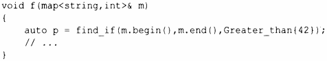
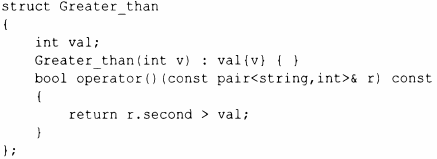
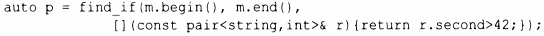

⇐12.4 Итераторы потоков 12.6 Обзор алгоритмов⇒
В приводимых до настоящего времени примерах алгоритмы просто "встроены" в действие, которое необходимо выполнить для каждого элемента последовательности. Однако зачастую мы хотим сделать это действие параметром алгоритма. Например, алгоритм find (§ 12.2, § 12.6) обеспечивает удобный способ поиска определенного значения. Более общий вариант ищет элемент, для которого выполняется указанное требование - предикат. Например, мы можем захотеть выполнить поиск в map первого значения, большего 42. Отображение позволяет получить доступ к своим элементам как к последовательности пар (ключ.значение), чтобы мы могли выполнить поиск вmap<string, int> пары pair<const string, int>, где int больше 42:
Здесь Greater_than - функциональный объект (§6.3.2), хранящий значение (42), с которым выполняется сравнение:
В качестве альтернативы можно воспользоваться лямбда-выражением (§6.3.2):
Предикат не должен модифицировать элементы, к которым применяется.